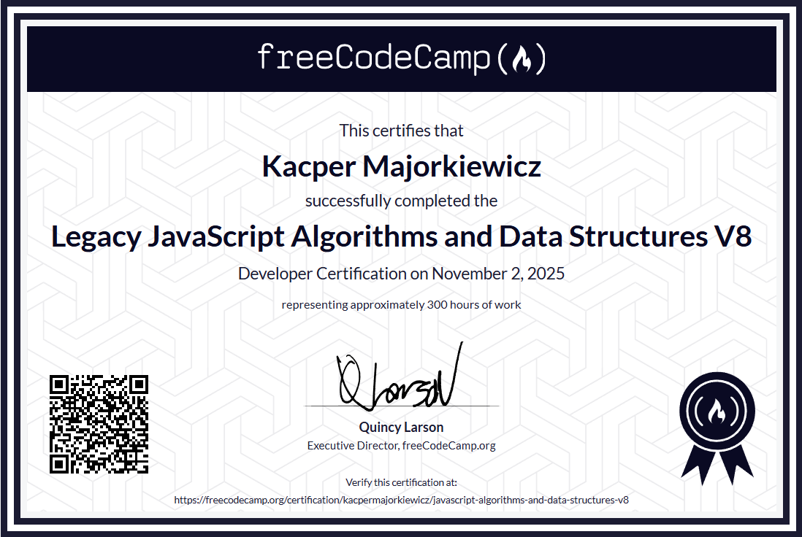
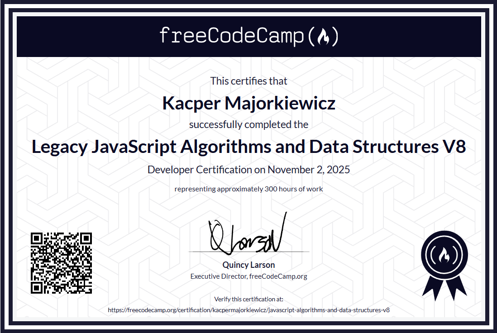

Projekt 1 - Strona portfolio
Strona pokazująca moje projekty, umiejętności, certyfikaty i dane kontaktowe. Dodatkowe funkcjonalności to m.in zmiana motywu strony oraz odsyłacze do potwierdzenia certyfikatów
Jestem początkującym frontend developerem, pasjonuję się tworzeniem stron internetowych i chcę rozwijać swoje umiejętności w praktycznych projektach. Lubię uczyć się nowych technologii i narzędzi, aby tworzyć nowoczesne i responsywne strony wciąż poszerzam swoją wiedzę w zakresie web developmentu m.in poprzez kursy online i samodzielne projekty. Również studiuję infomatykę stosowaną na Politechnice Bydgoskiej.
 

Strona pokazująca moje projekty, umiejętności, certyfikaty i dane kontaktowe. Dodatkowe funkcjonalności to m.in zmiana motywu strony oraz odsyłacze do potwierdzenia certyfikatów
Email: kacper.majorkiewicz@gmail.com
Linkedin:Przejdź do Linkedina